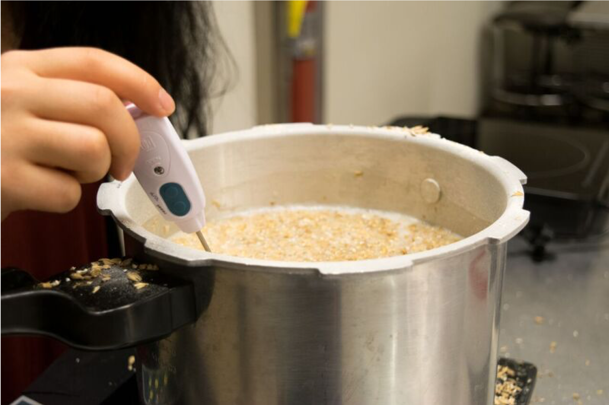
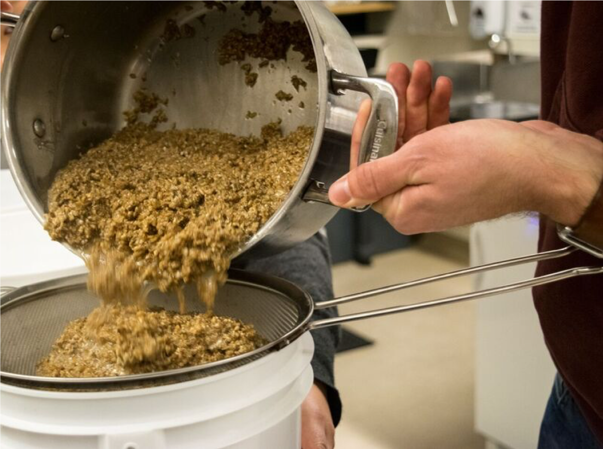
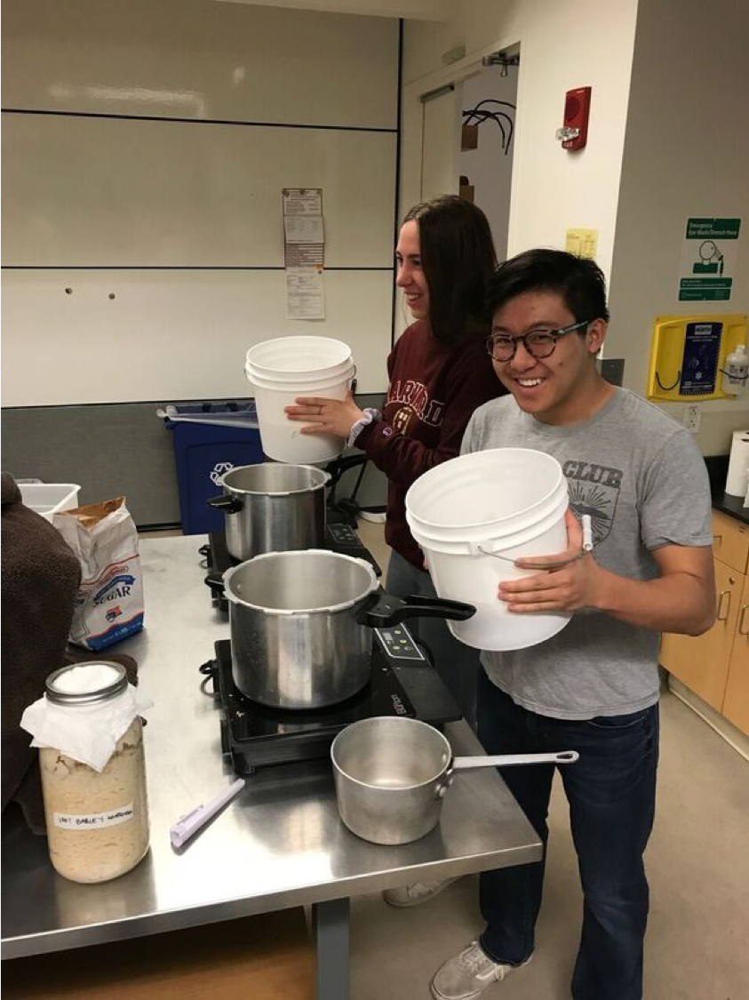

The experts hard at work!

Warming the mash (the ground grain soaked in water to dissolve out the sugars)
Keeping the mash warm
Much of our basis for the recreation was from a primary source, “A Hymn to Ninkasi,” which describes the process of ancient brewing. That said, it is a hymn, so some of the artistic liberties taken in it make the process unclear. The hymn seems to cover many of the steps of modern brewing, although at one point Ninkasi adds dough to the mixture, which we interpreted as sourdough. We also drew information from more recent studies claiming to find spices like cardamom and garlic in brewing vats.

Straining the wort (the liquid solution containing the sugars) from the mash
Straining the wort from the mash
Pre and post strained mash
Thus, from the information in these sources, we decided to test two main variables: the presence or absence of sourdough and the flavoring of the beer through spices. For our first round of brewing, the sourdough beer ended up being much too acidic and sour for consumption. Fortunately, some of the brews that used industrial yeast instead turned out not only palatable, but “not as bad as we thought.” In our second round of brewing, we cut the sourdough and instead used a barley and emmer mash for all brews, and made hopped and non-hopped versions of both plain and lightly spiced beer (Although they did not have hops in ancient times, we wanted to use it as a control and to preserve the beer better). We excitedly await the results.
Strained wort. It already looks like beer!

The wort is ready to be boiled for sanitation purposes.
Cooling the wort after boiling

Who doesn’t want garlic flavor in their beer?
Adding sourdough starter to batches to introduce yeast.

Reading the alcohol content of a finished beer